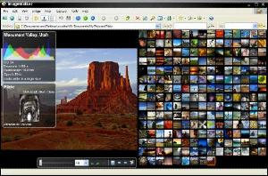

ImageWalker will allow you to manage your image files visually. It simplifies the process of viewing, cataloguing, and publishing digital images. Its features include; web page creation, thumbnail generation, contact sheet printing, batch image conversion and slide show.
For specific information try the following sections:

ImageWalker is designed to be easy to use. It looks just like Windows Explorer but has many powerful image management features built in. See the user interface guide for more information.